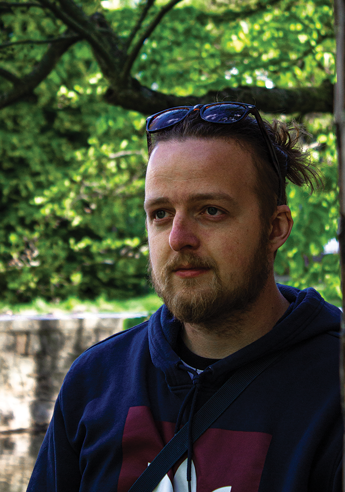

Læser til multimedia designer på UCL i odense.
Født og opvokset på Fyn, mere præcis Sydfyn. Kommer fra en stor familie med tre brødre og en søster.
Jeg har fra en ung alder været interesseret i film og spil og brugt meget af min tid på det. I gymnasiet
havde jeg mediefag, hvilket var min introduktion til medie verden, i form af hvordan film bliver lavet
og hvordan man kan bruge forskellige metoder til at fortælle en historie. Siden da har jeg været i gang
med at uddanne mig til multimedie animator med fokus på 3D visulationer
Ved siden af multimedieanimatoren uddannelse tog jeg en web integrator uddannelse. Min primære interesse ligger stadig i for billeder og hvordan de kan fortælle en historie. Hvilket af grunden til at jeg nu læser til multimedia designer og at jeg fornyelig har købt et kamera.